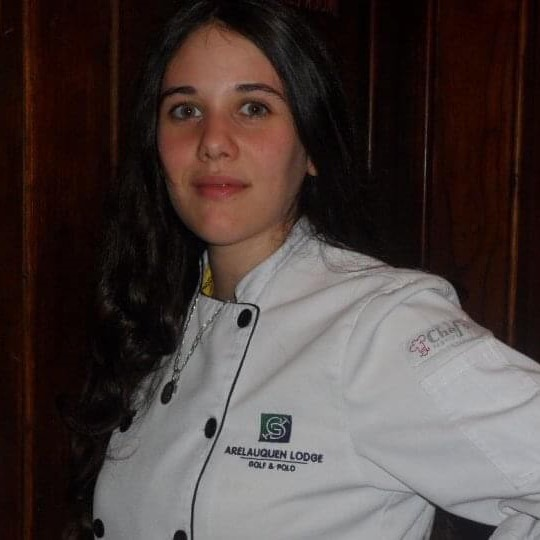

Our Founder

Born in Mar del Plata, Buenos Aires, Argentina, Mery Peart was raised as any typical Argentinian with food being a greatly important factor in life and the center of family gatherings. Having Irish, Italian and Spanish lineage, Mery was exposed to a plethora of exquisite national dishes from her ancestral roots and Argentinian upbringing. This eventually led her to studying Culinary Arts in the famed "Bergman Culinary School" in Buenos Aires where she found her calling in all things confectionary. Cakes, Pastels, Media-lunas and Alfajores, Mery has a life-long passion to share her sweet-tooth with the world.